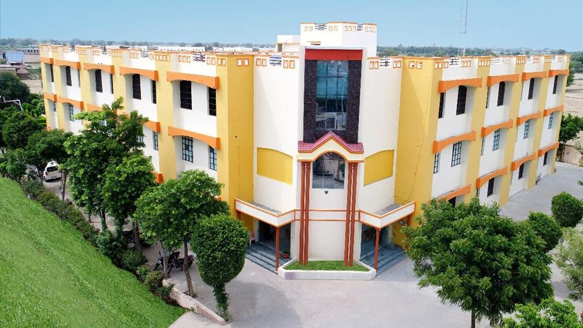

Vatsalya Public School is an english medium School.It is a dream project of Sh. Shyam Sundar Sharma, Reverent father of Mr. Harish Sharma the Director of school under the inspiration force and guiding spirit of Baba Siya Ram Das Maharaj. He is an eminent personality of simple living and high thinking with a greate foresight and new dimensions. This Academy is the out come of his blessing, guidance and inspiration. The School Management is also a great ful to venerable who is a torch bearer and inspiration force VATSALYA PUBLIC SCHOOL. Meaning ful education should harmonize with social requirement and be relevent to the prevailing times. We will make our students to be a creator then being a passive receptor A gain os mental and spiritual reflections that benefit self and others around our motto is to develop self - confidence through a sense of responsibility and leadership in every walk of life. inculcate in the students a sense of mutual respect universal brotherhood , Love and friendship The School is a garden where each plant is trended carefully so that the flowers that bloom spread their fragrance all around.
Keeping this vision and philosophy VATSALYA is committed to the development of young minds into knowledgeable, confident, successful and responsible global citizens.Through the ue of modern teaching methods,state-of-the-art facilities and top-class faculty, we aim to create an environment that promotes creativity, curiosity and individual excellence through self-discovery. The young flowers in our care are blooming bright,free from all prejudices and developing a rare aesthetic sense as well as scientific temper.
(1)To provide a caring, respectful, and secure multicultural environment.
(2)To inspire students to accept challenges and enhance their own performance.
(3)To imbibe in the students a strong sense of personal,social and environmental responsibility.
(4)To use a comprehensive programme of varied instructional strategies and innovative techniques in technology towards academic and co-curricular excellence.
(5)To support a highly committed and creative faculty.
(6)To encourage a participative community of responsive and responsible parents, alumni and other stake holders.
Practise empathy, care, love and respect in relationships. Encourage tolerance and responsible behaviour. Instill dignity, integrity, and compassion. Foster adaptability, courage and resilience amongst students.